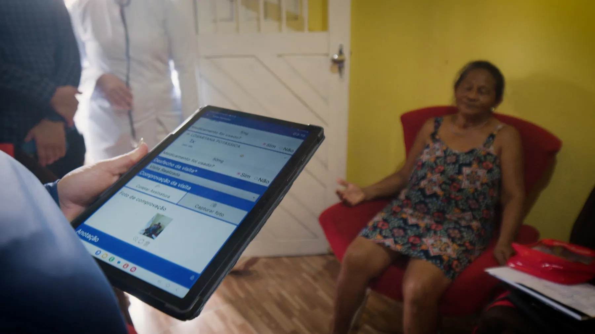
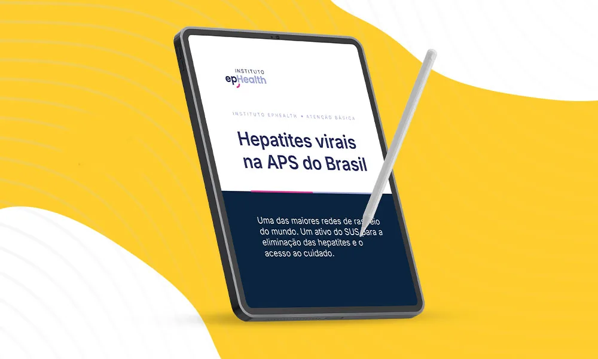
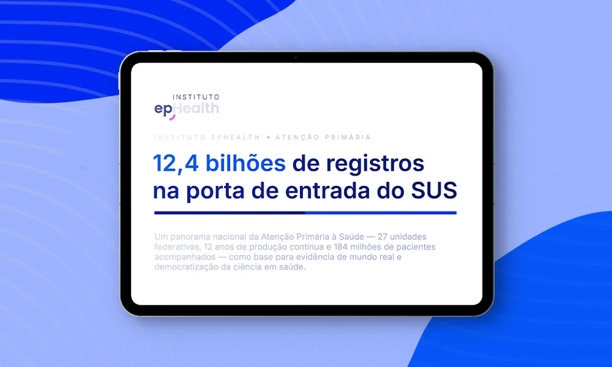

Primary Care Insights
A atenção primária brasileira em dados.
Reports com panoramas nacionais da atenção primária, feitos a partir de dados públicos do SUS.

Reports
Últimos panoramas

Hepatites virais na APS do Brasil
Panorama nacional da testagem e do cuidado das hepatites B e C na atenção primária.
Solicitar o report
A atenção primária brasileira em dados
Panorama nacional da APS: 12 anos de produção e 184 milhões de pacientes acompanhados.
Solicitar o reportBase de dados
De onde vêm os números
12,4 biregistros da atenção primária
184 mipacientes ativos
27unidades federativas
2013–26período coberto pela série histórica
Fonte: medRxiv, 2026 — SISAB.
Fale conosco
Vamos conversar sobre o seu próximo estudo
Conte o que você precisa. Nosso time de pesquisa, tecnologia e saúde pública responde em até 2 dias úteis.